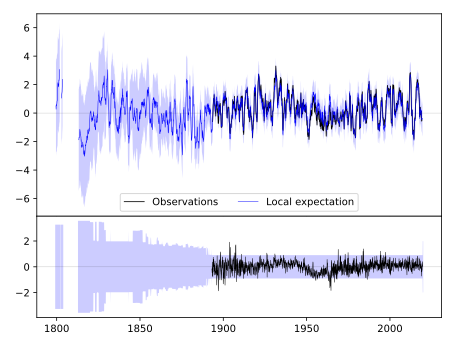
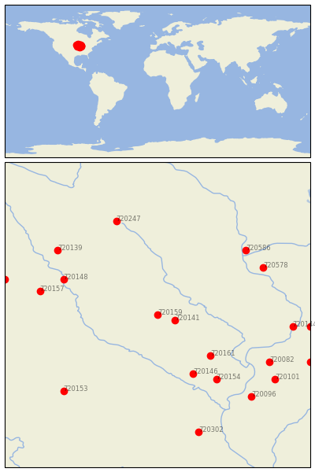
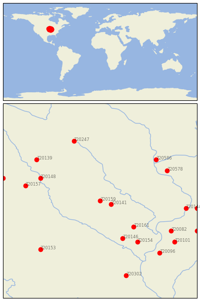

TOLEDO 3N [USA]

 
| Neighbour | Name | Country | Distance | Lon/Lat | Years |
|---|
| 720159 | TOLEDO 3N | USA | 0 | -92.6, 42.0 | 1893-2019 |
| 720141 | BELLE PLAINE | USA | 27 | -92.3, 41.9 | 1889-2019 |
| 720161 | WASHINGTON | USA | 107 | -91.7, 41.3 | 1875-2019 |
| 720146 | FAIRFIELD | USA | 121 | -92.0, 41.0 | 1855-2019 |
| 720148 | FORT DODGE 5NNW | USA | 147 | -94.2, 42.6 | 1851-2019 |
| 720154 | MT PLEASANT 1 SSW | USA | 147 | -91.6, 40.9 | 1863-2019 |
| 720157 | ROCKWELL CITY | USA | 170 | -94.6, 42.4 | 1893-2019 |
| 720578 | LANCASTER 4 WSW | USA | 172 | -90.8, 42.8 | 1872-2019 |
| 720586 | PRAIRIE DU CHIEN | USA | 173 | -91.1, 43.1 | 1822-2019 |
| 720082 | ALEDO | USA | 181 | -90.7, 41.2 | 1879-2019 |
| 720139 | ALGONA 3 W | USA | 185 | -94.3, 43.1 | 1861-2019 |
| 720247 | ALBERT LEA 3 SE | USA | 186 | -93.3, 43.6 | 1885-2019 |
| 720144 | CLINTON #1 | USA | 191 | -90.3, 41.8 | 1857-2019 |
| 720153 | MT AYR | USA | 196 | -94.2, 40.7 | 1892-2019 |
| 720096 | LA HARPE | USA | 205 | -91.0, 40.6 | 1893-2019 |
| 720101 | MONMOUTH | USA | 206 | -90.6, 40.9 | 1881-2019 |
| 720102 | MORRISON | USA | 216 | -90.0, 41.8 | 1880-2019 |
| 720158 | STORM LAKE 2 E | USA | 223 | -95.2, 42.6 | 1889-2019 |
| 720302 | STEFFENVILLE | USA | 230 | -91.9, 40.0 | 1893-2019 |
| 720089 | GALVA | USA | 233 | -90.0, 41.2 | 1862-2019 |